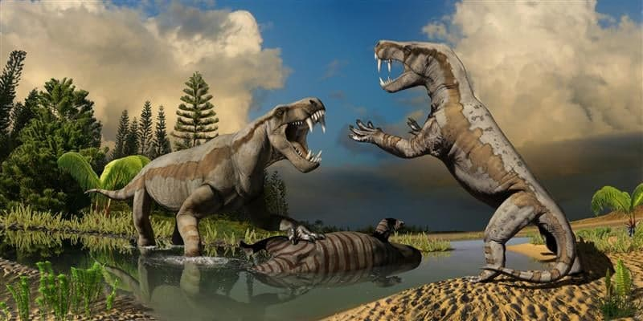

Sarkozuch: Daleki krewny krokodyla. Ale bez porównania dużo groźniejszy. Mierzący 12 metrów i ważący 8 ton drapieżnik. Stosunkowo wąskie i długie szczęki zawierały 132 masywne, stożkowate zęby. Pysk stanowi 3/4 długości całej czaszki. Szczęka trochę dłuższa od żuchwy. Wzdłuż grzbietu szereg dużych płytek kostnych o długości do 1 m.
Gorgonops: Ten zabójczy mięsożerca żył około 260 milionów lat temu. Był największym drapieżnikiem swoich czasów, największe osobniki dochodziły do 4 metrów długości ciała. Jego cechą charakterystyczną były długie kły. Był także niezwykle szybki.
Sarkozuch:
Gorgonops: